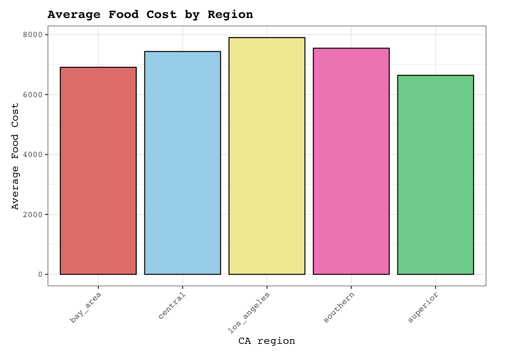
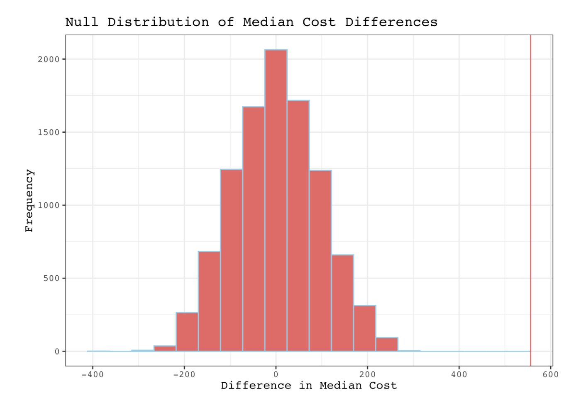
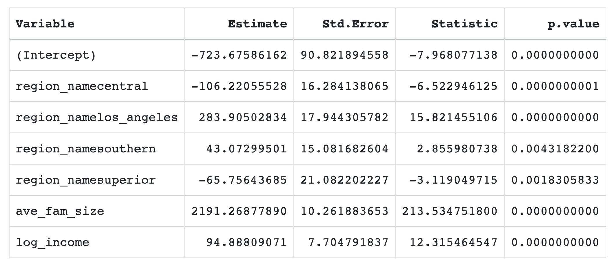
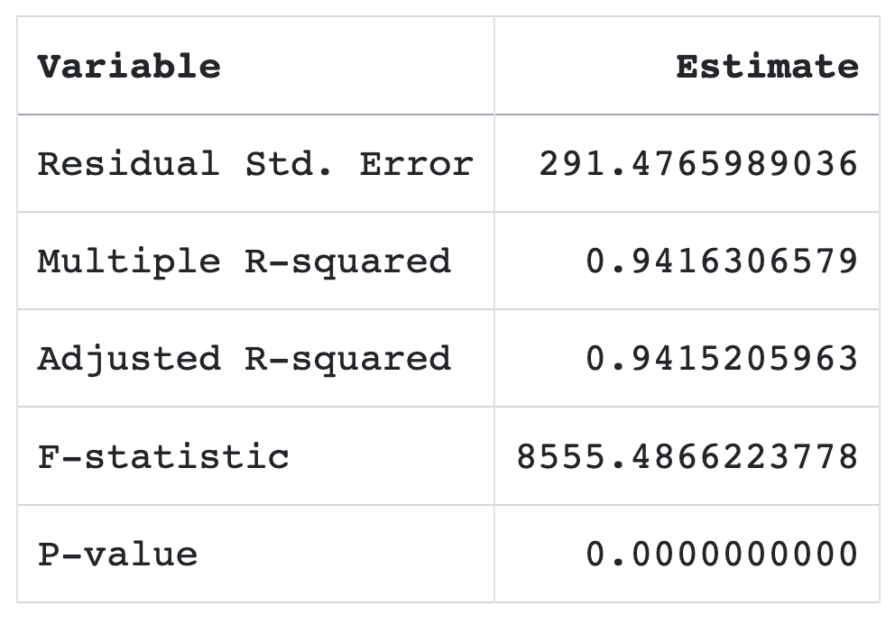

Predictors of food security and affordability in California
Why food affordability?
My initial project proposal sought to investigate the correlations between food insecurity and gender identity in Mexico using INEGI data. However, the datasets of interest were virtually impossible to join based on geography. Furthermore, the datasets available to download were limited to certain years and only certain sections of the surveys of my interest (ENSANUT and ENDISEG).
Instead, I am analyzing food affordability data from California, specifically that of female-headed households, across CA regions. This project is only a starting point in exploring the challenges and systemic obstacles faced by female-identifying heads of households. In fact, the main learning outcome of the project, as I will show below, is that almost any environmental issue, including food security, requires a nuanced & complex understanding of its origin for there to be a just solution to it.
If you are interested in exploring Mexico’s first gender non-conforming census survey, check out this page! 1
Now, let’s dive into the data!
Data description
The data set was created by the U.S Department of Public Health, using data from:
U.S Census Bureau’s American Community Survey (CA households and family data, and median income data)
U.S Department of Agriculture’s Economic Research Reserve (annual food cost data)
Office of Health Equity’s Healthy Communities Data and Indicators Project (food affordability ratio)
Data from 2006 - 2010 in California
Data cleaning and data exploration
Exploration
- Visualize distribution of median income (median_income), log-transformed median income(log_income), food cost (cost_yr)



Cleaning
Drop all NAs for median_income. All rows missing data for median_income were also missing cost_yr data. Both of these variables were crucial for my model down the line
Filter median_income to values less than $120,000 and took the log
Drop the region_name column to replace it with a new region_name column consisting of 5 different regions, instead of the original 15 regions in the data designated by the Metropolitan Planning Organizations (MPO)
- This will be useful down the line when trying to fit an lm model to the data
Analysis Plan
Randomization Hypothesis Test
I conducted a randomization hypothesis test first because I wanted to avoid diving deeper into the relationship between CA region and food cost if there wasn’t one to explore in the first place
Null Hypothesis (H0): Region does not have a significant effect on food cost.
Alternative Hypothesis (H1): Region does have a significant effect on food cost.
I repeated the randomization test for 4 different pairs of regions to ascertain that the relationship between food cost and region existed for all 5 regions, not just one.

The resulting p-value of every single randomization test was 0 or virtually 0, giving me strong evidence to reject the null hypothesis. Under the assumption that the null is true, it is very unlikely that the observed food cost data would occur by chance and without the effect of region.
Fit an OLS Model (or two.. )
- After confirming that there is in fact a relationship between region and food cost, it is time to understand what the actual effect of region is on food cost in our data, I decided to fit an OLS model to my data
cost_lm <- lm(cost_yr ~ region_name + ave_fam_size + log_income, data = food)

So far so good, right? The coefficients of my model tell us that:
Region has a small effect on food cost in the Southern and Superior CA regions, compared to our baseline (Bay Area). However, living in Los Angeles significantly impacts the cost of food (by increasing it)
Average family sizeis, logically, a strong predictor of food cost - the larger the family, the greater the expenditures on food.
Median income is, also logically, a strong predictor of food cost - the higher the income, the higher the expenditures on food
Not only are the coefficients are significant, but the R squared of the model is high, telling us that the model accounts for a great portion of the variability in food costs. Furthermore, the p-value indicates that at least one of my predictors is significantly affecting the cost of food.

Not so fast!
Like I said in the beginning of this blog, no environmental issue is simple.
Let’s see what the residuals of my model have to say for themselves …
What at a glance seemed like a great model fit is actually quite the opposite.
- First, I plotted the fitted values vs. the observed food cost values. The plot showed that my model was, in fact, not a great fit.

Although the points seem to follow the direction of the lm line, they fall within a specific range, indicating that my model is either omitting one or more significant variables/interactions, or it is not flexible enough to fit the data outside of a certain range.
To investigate further, I decided to plot the residuals of my model vs. food cost by region. I wondered if my model could predict food cost accurately for some regions.

- Plotting the residuals further confirmed that the model, in fact, is not a good fit. Regardless of region, the residuals did not exhibit a random distribution. In fact, they seem to indicate a “C” shaped pattern, regardless of region.
Concluding thoughts
My analysis plan showed that the data did not meet the assumptions of an OLS model - after plotting the residuals it is clear that there is no homoscedasticity in at least one of the predictors. There may also be multi-collinearity between predictors. It is also clear that there are non-linear relationships between predictors and the dependent variable.
The fitted model clearly exhibits omitted variable bias, though that does not come as a surprise given the size and characteristics of the dataset. An OLS model was most definitely not the right fit for the dataset, or at the very least, not the right fit for the predictors I chose.
Even so, the results of my analysis help me answer my question. After exploring, cleaning, and analysing the data I have a better understanding of at least some of the mechanisms and relationships in the data. In fact, failing to fit an OLS model to the data helps me identify areas for improvement and new directions to go in if I choose to further pursue an answer to my question.
Future steps
Future steps would include expanding the scope of the dataset - more variables are necessary in order to reach any solid conclusion on the challenges and systemic obstacles faced by female-identifying heads of households. After this exersise I doubt that any model that I attempt to fit would confidently and robustly explain the mechanisms of the data / answer the research question. Just to mention a few possible next steps:
It would be helpful to incorporate the cost of living and data on the CA housing market by region
Comparing this data to that of male-identifying heads of households
Expanding the scope of the data to other gender identities
Including race in future analysis. We know that environmental issues almost always disproportionately affect populations of color
Explore a better fitting model type, not a linear model
Account for the fact that significant social, political, or environmental events in any given year have an impact on the cost of food.
Research and explore social and economic patterns within CA regions
References
California Counties and Regions
Footnotes
Citation
@online{morquecho_rubalcava2024,
author = {Morquecho Rubalcava, Kaiju},
title = {Predictors of Food Security and Affordability in
{California}},
date = {2024-12-13},
url = {https://kaimorquecho.github.io/posts/2024-10-18-my-first-post/},
langid = {en}
}